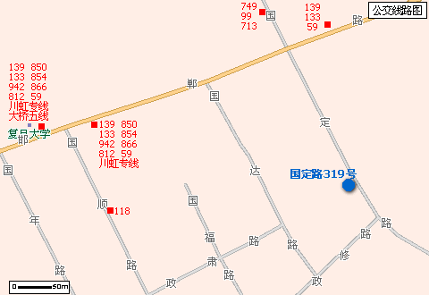

本次活动由复旦大学日月光华bbs之UNIX版主办,复旦大学国际经营技术讲习所协办,irc.pchome.net之#geekbone频道协助
本次活动旨在推广普及GNU/Linux,并适当讨论一些高阶主题
时间: 7月26日,9:00--17:00
地点: 国定路319号2号楼,同欣进修学院二楼报告厅
日程安排
9:00--9:15 开幕词
9:15--10:00 GNU精神
10:00--10:15 break
10:15--11:45 系统安装,中文化,内核编译和硬件安装等
11:45--12:00 Q&A
12:00--13:00 午餐
13:00--14:00 GNU/Linux System & Service Security
* GNU/Linux 简介
* 思考安全所带来的威胁
* 设计安全的公开化网络
* 系统和程序的升级,更新和优化
* 系统服务潜在危机
* 入侵侦测技术
14:00--14:15 Q&A
14:15--15:15 缓冲区溢出
15:15--15:30 Q&A
15:30--16:30 Linux企业级应用的介绍
组建一个低成本高可用性的Linux服务器
16:30--17:00 Q&A
注:
1.有兴趣者,活动当天可自带机器,当场解决问题
2.交通:139、133、942、812、850、854、866、118、59、大桥五线、机场四线、川虹专线, 复旦大学下车.
713、749、99、817、910,国定路下车.
地图：
